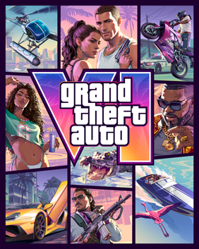

Grand Theft Auto VI é um jogo eletrônico de ação-aventura de 2026 desenvolvido e publicado pela Rockstar Games. É o oitavo título principal da franquia Grand Theft Auto, sucedendo Grand Theft Auto V (2013), e o décimo sexto título no total. Ambientada no estado fictício de Leonida, nos Estados Unidos, inspirado na Flórida, história acompanha a dupla de criminosos Jason Duval (Dylan Rourke) e Lucia Caminos (Manni L. Perez) enquanto levam uma vida de crimes para escapar de policiais corruptos. O mundo aberto do jogo permite que os jogadores explorem livremente Leonida, que inclui Vice City, uma cidade inspirada em Miami, participando de diversas atividades paralelas.